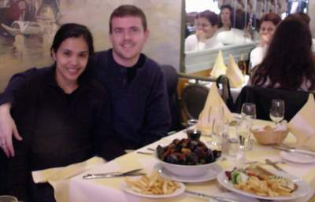
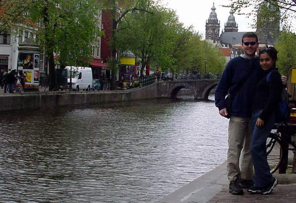
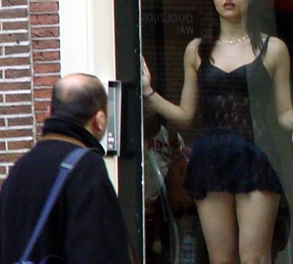
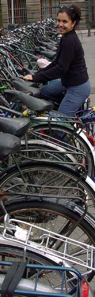
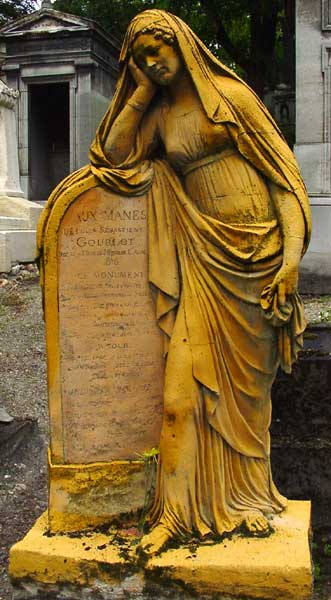
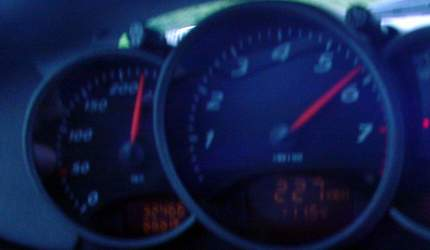
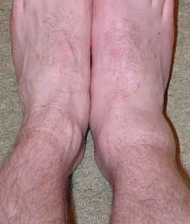
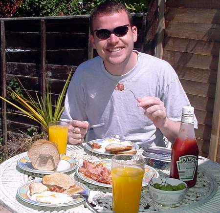
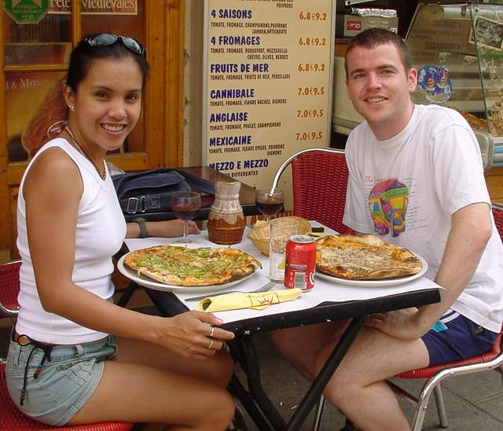

14 October 2002
Well. I wanted an interesting title for this travelogue. And so far this is about the freakiest thing that has happened to me since I last wrote.
Don't worry. I wasn't actually abducted by aliens, but it was a close call. The full explanation is a little further down the page in this travelogue.
I've just recently found that I can call pigeons. Admittedly it isn't really that great a skill, but the results are pretty cool. There are plenty of 'flying rats' around. The first time I heard one cooing away, I thought it was some sort of insomniac-owl. So I tried cooing back. I got a bit of a surprise when the pigeon flew past not more than a couple of feet away.
I've since done it another four or five times... Each time it seems to call the pigeon to me... Really weird. Maybe the call just sounds right or something, but it seems to work. Ha!
They only thing I'm worried about is that they'll twig to what I'm doing and wreak their revenge by crapping all over the car. (or me on my way to work)
I've started work with Kraft foods in Cheltenham. The commute is a bit of a pain compared to my last job. Now I have to walk out of the house. (It is half a mile away)
I started there on the 6th of June. And have been enjoying the work so far. Probably the main reason I joined was for the social aspect. (One of the downsides of working from home I guess)
So far the work has been interesting and the people are great. But the best thing about it is the regular hours. (Although I still find myself staying an hour or three later than normal... just cause I'm doing something interesting.)
I chickened out on selling the car in the end. I had someone offer to buy it, but I really couldn't part with it. But a couple of weeks later, some prick decides to walk over the car one night. He dented the front and rear bonnets, and left footmarks all over the car. Must've been incredibly funny. Oh how funny. I couldn't stop laughing...
I hope he gets cancer and dies.
Alright. Maybe not cancer. Perhaps he could just lose a testicle or something, but honestly, what a w**ker!
I'm still tossing up whether to sell it or not. But have sort of decided that I'm still enjoying it, so why not hang onto it for a while. Also, it's the season for golf. And I don't play as well unless I drive to golf in a Porsche. Actually, I play like rubbish no matter what I drive in.
I'm still going to sell it, I'm just procrastinating a little.
Anyway, the main reason I'd put off selling the car, was that I wanted to go for a decent drive on the continent... And the Boxster is the perfect car to do that in. Liezl had 7 days off (after doing 7 nights at the hospital) and I was between jobs, so it was good timing to head off to the continent for a bit of a break.
We drove down to Dover and caught the ferry across to Calais. Originally we'd planned to catch a very late ferry and just drive straight to the Netherlands. But we ended up getting bumped onto a much earlier ferry since we'd turned up super-early, so we decided to drive as far as Brussels and spend the night there.
Brussels was pretty cool. It was incredibly easy to drive to. Something that was odd, was how empty the roads were as soon as we hit Belgium. These fantastic three lane roads (or do you call it a 6 lane dual carriageway when 3 lanes go each direction?) all to ourselves. Loved it!
It was surprisingly easy to get into the centre of the city. Finding accommodation was a little trickier. My ignorance of the French language is only superseded by my bad pronunciation of what little French I do know. In the end I only needed some basic Arabic. (with a smattering of English) There were several Moroccan-run restaurants in the south part of Brussels city centre, so we stopped in for a hot chocolate before finding ourselves a bed for the night.
The next day we wandered around, just doing a little shopping. At lunch time we heading into the local tourist trap and found a place that had a very nice seafood spread out front. They did do lovely mussels and chips as well as very delicious Veal escallops. Yum!

I can't believe we ate all that!
After lunch we decided it was time to make tracks to Amsterdam. And apart from getting a little lost on the Antwerp circular system, we made it there without incident.
On our way into Belgium, almost straight after crossing the border, I noticed some sort of swirling effect up in the sky. There was a fair bit of rain, so at first I wasn't sure exactly what it was that I was seeing. Initially I thought it was some sort of freak tornado-type cloud formation. Only it was spinning a little quicker than I'd expect. But it quickly disappeared, so it made me doubt I'd even seen it at all. Only, a minute later, I see the same thing. This time it completely freaks me out. What the hell is causing it? The rain didn't seem to be that bad, so I sort of doubted it was an actual tornado/hurricane. I don't know why (perhaps I've watched to many X-Files episodes) but I immediately thought 'Aliens!'.
Sure enough, it wasn't aliens. About another minute later, and the same whirlpool effect appeared overhead. The regularity of it made me a little more comfortable that it was something explainable. Sure enough, after I stopped the car and had a good look at it, I could see that it was just something projected onto the bottom of the clouds. I could see a small town to the west, and occasionally you could see the high-powered light illuminate some of the rain, giving us a good idea of where the origin was.
I can only imagine that it was for some nightclub or something similar. (Considering this was about 22:30 local time)
Fortunately, no more alien appearances were to take place on our trip. Unless, of course, you count some of the weird characters in Amsterdam...
Amsterdam was pretty sweet. I'm not sure what exactly I was expecting, but it met any expectations I had.
We managed to find our hotel without any difficulty. A nice enough place (considering the budget we were on) that overlooked one of Amsterdam's many canals. The numerous canals are everywhere throughout Amsterdam. I think you'd be hard pressed to stagger home blind drunk without falling into at least one of them. Maybe if you went SCUBA diving in one, you'd find a few missing bikes/cars/politicians...
We were both a little knackered from the drive so we had a little siesta before hitting the town for dinner. That, a few beers and a little wander around the centre of town was all we were up for that night.
We did manage to get onto a boat tour around the 'Dam the next day. Typical tourist guff, but the sun was out and we were nicely roasting inside the perpex-covered cabin. Considering the temperature outside wasn't brilliant, it made for a pleasant way to see Amsterdam from a different perspective.

Yey and I on the prowl around the red light district. (photo taken by one of
the drug pushers)

Really friendly ladies invite guys in for a chat and a cup of tea. Amsterdam
is great!

Yey tries to steal a local bike.
Something I like about Amsterdam is it is built for bikes. Car parking is very limited, public transport is excellent. I wish more cities were like this. It is something I liked about Beijing too. (although public transport there WAS a pushbike)
I'd love to say that I went to the Van Gogh museum, then headed off to Anne Frank's house, but I can't. Instead we ended up walking around the red light district gawking at the sights and sounds before getting a couple of beers and ultimately finishing off the evening at a lovely little cafe getting complete wasted on some imported weed.
One thing to watch out for in the red light district are all the drug dealers. Selling everything from Heroin to Cocaine. They seem nice enough lads, and fortunately they are not too pushy, but there are a lot of the buggers. It doesn't come across as terribly bad though. The illegal drug dealing and demi-legal smoking cafes don't seem to have destroyed the pleasant feel about the city though. Even walking back to our hotel at 2-3am, still seemed safer than back in the UK. The only poorly behaved people we saw there were English, which isn't unusual really. You can lead a scouser to booze, but you can't stop him from being a complete arsehole once he's finished drinking it. (Actually, I don't just want to slag off scousers, but any prick who gets agro after a few pints.)
We had a relaxed next morning. It was difficult to psych ourselves up for the drive down to Paris, but somehow we managed. Coming back down through Belgium was pretty uneventful. A minor detour took us about 80 miles west of where we wanted to go, but we made it out alive which is what counts.
Driving around Paris seemed a little frightening when I came here with Dad in January, but it didn't seem quite so intimidating this time. Possibly because I'd researched where we had to go rather than just driving blind. (I've got to stop closing my eyes through intersections though!)
Like Amsterdam, finding our hotel was a piece of cake. What wasn't so easy, was navigating our way through the one way streets to get there. It's frustrating to see the hotel, but have no idea how to get there.
Once again, we had arrived in the early evening needing a small siesta to sustain us. But after a lovely nap we decided to investigate the local area for somewhere nice to eat. There wasn't actually a lot of pickings where we were. Maybe we were in the Brixton of Paris. It was about the right spot for it. (sort of SE Paris, mostly south though) Also, our siesta was a little longer than planned, so I wasn't expecting to find a lot open. Funnily enough, the French (unlike the British) seem open to the idea of eating after 11pm. The restaurant we ended up at served food until 1am. Sure, the speed of service might have left a little to be desired, but the wine and food were both excellent.
The next morning we went to Cimetière du Père Lachaise, Paris's loveliest burial ground to visit Jim Morrison's grave. Apparently, several famous people are buried there, but for the main part I only recognised the names of Frederick Chopin and Oscar Wilde.
I was a little saddened by the amount of graffiti as we approached Morrison's gravesite. The walls of mausoleums next to his grave are inundated with it.

You'd be bored too hanging around with all these arty types!
The rest of the time we spent walking around Paris, either going to cafes or restaurants, or unsuccessfully trying to find some shop that was open so we could do a little shopping. Unfortunately, Paris seemed to be completely dead, so I would recommend a different Sunday activity.
Other things are open. Most of the tourist attractions for instance. The queue for the Louvre was ridiculous though. (Every first Sunday of the month they let everyone in for free)
Later on in the evening we went to Moulin Rouge (just to see the club, not to go there) and then wandered around to find some nice food once again. It may be possible to eat bad food in France, but I have yet to experience it.
After spending the weekend in Paris, it was time to head back home. I made a little mistake driving back, and must have missed a turning somewhere, as we almost went to Calais via Dunkirk. (I ended up following the GPS waypoint to Calais as I haven't got a decent road map of France)
I'm amazed by how fast the drivers are in France. I don't think I travelled particularly slow, but I still got overtaken a lot. But on the whole they seem pretty good.

I mean, clear roads, what are you meant to do?
Passing through London we stopped at Darian & Cindy's. They've just bought a fantastic place in the south-east part of London. Liezl thinks they bought our house, as it had exactly what we were after. (We are looking around for something in Cheltenham, but it is tough going)
I think I say it a lot, but where oh where does the time go? (Same place as those odd socks I reckon)
I had a nice birthday, but kept the actual evening reasonably low key. (But I had a great party on the weekend) It's hard to believe 30 years have come and gone. (and so quickly too)
The day after my 30th birthday I managed to stuff my ankle. The swelling had gone down a lot by the time I'd taken this picture, but it gives you a good idea of how much damage I'd done.

Can you spot the difference?
I'd been playing football with the young-skins from work. Initially I was a bit nervous about playing football in this country. Poms are bloody good at the game. I thought about playing rugby instead. Only Gloucester is rugby country, so I'd be pretty crap in comparison. So now I'm playing football and I just don't care how crap I am. (Even managed to score a goal during one game - not bad considering I was playing defence)
I have no idea why it happened, but Liezl's and my favourite pizza place went under not too long ago. Pizza Provencale did the most amazing pizzas, great mussels, good food all round and the service was excellent. Yet night after night, the line for Pizza Hutt went out the door and onto the street, yet Pizza Provencale was almost empty. Maybe Cheltenham residents have no taste, or the 400m walk to Provencale was too far or something. I don't understand it. Just as well I'm not planning on opening a restaurant.
A list of good and bad companies.
And talking about bad companies... that bloody hotmail... They really need to do something about SPAM to their accounts. I've had to pretty much close mine. You can still send me emails to my hotmail account, but you need to add kiwi or davewasthere to the subject line, so it doesn't get binned as SPAM. But you are better off using my BeerNet address - d a v e (AT) b e e r . n e t . n z.
Something I put a little research into lately (you can tell I've had time on my hands), was who was the original owner of the following quote:
"Small people talk about people. Average people talk about events. Great people talk about ideas."
I have had to conclude that it is anonymous. I originally saw it on a friend's desk back in 1997. It was attributed to some American Naval officer I think. But I've also seen the same quote (arranged slightly differently) attributed to the following people; Fred Harteis, Evelyn Thanx, Dave Marinaccio, Tobias S. Gibson... among others.
Who knows who originally thought up the line, but I think it is exceptional. Right up there with Einstein's quote. "The world is a dangerous place to live. Not because of the people who are evil, but because of the people who don't do anything about it". Only problem is, that quote probably isn't perfect either. There are so many different versions floating around, it's hard to tell which one is the original.
The weather has been a bit variable, but we've had some lovely days. Occasionally the weekend isn't disgusting and we've even managed to go walking over the countryside to have a little picnic. (Some champagne, fresh sandwiches and fruit... went down a treat!)

One of the three sunny weekends we've had this year. So we had to breakfast
outside.
Also, the bonus about it being summer is things are growing out in the back garden. Sometimes I even manage to have a bit of an influence in which things prosper. (Normally the weeds, but I've managed to propagate some roses from cuttings which I thought was particularly cool) I've got a bit of a herb garden going too... Well, two herbs anyway. Mint and Parsley. I can't say I cook with the mint at all. But I found a cutting and just tried it to see if it would take. But the parsley has been useful in my latest dish. (It's sort of a seafood marinara... with squid, mussels, shrimp and pasta... YUMMY!)
Hamish and I went to the Farnborough air show this year. He had access to some free passes and generously invited me along.
This photo doesn't do the Eurofighter justice. It was an impressive display. Damn noisy though!
The Segway was there too. The model I saw looked very well used. I wasn't as keen on having a go on that as I was about flying the MIG-29 simulator. I thought I'd display a bit of skill having had many hours flying paper darts at home, but no, I was pretty crap. I barely managed to get the jet back down on the deck without freezing the simulator. Sure other guys did worse, but I was a bit bummed to be counted among the gumbies...
Still, it was well worth it! And I managed to practice some of my Russian too. (my vocabulary is down to about 6 words though, which is a shame)
Unfortunately I didn't manage to get to the Sukhoi pavilion in time. Which is a shame, seeing that the SU-27 is my all-time favourite aircraft. Just a little while earlier, one had crashed at an air show in the Ukraine killing 83 people.
Maybe it was a waste of a flight, but we wanted to head away for a couple of days and Nice seemed like the ideal spot. We'd just seen Stellar and the Feelers live in Shepherds bush on Friday night. Then on Saturday we flew out to Nice to sample the Côte d'Azur.

Some pizza and wine for lunch. Yummy! (Most of our trips seem to focus on
eating...)
We hired a motorbike and cruised over to Monaco for a little look around. Very flash and expensive. Didn't bother with the casino, as I'm sure if I ever feel like throwing away money, I'd have more fun renting a Modena 360 or similar. (Yes, I still have that dream)
Unfortunately, we didn't get down to Antibes or Cannes. We both wanted too, but only spending a couple of days there didn't really give us enough time. I would definitely be keen on heading back though. (And perhaps driving across to Italy as well.
Once again, another travelogue over and done with. This one has been a long time in writing. I started it before summer, which is now well and truly over. (Too busy making the most of summer is my excuse)
Again, there isn't a huge amount of travelling. But I've got a decent trip planned for next month. Yey and I are planning on going to the Philippines and hopefully Dubai as well. We were trying to come back to New Zealand, but that probably won't be happening this time. It is a combination of time and money. My current plan is to come back in February Inshallah.
Anyway, until next time.
Adios.